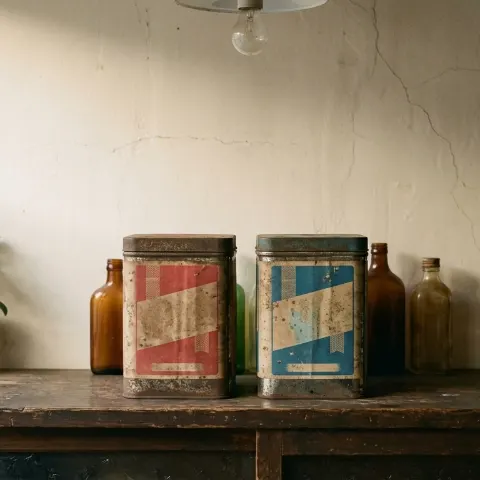
No.01イメージ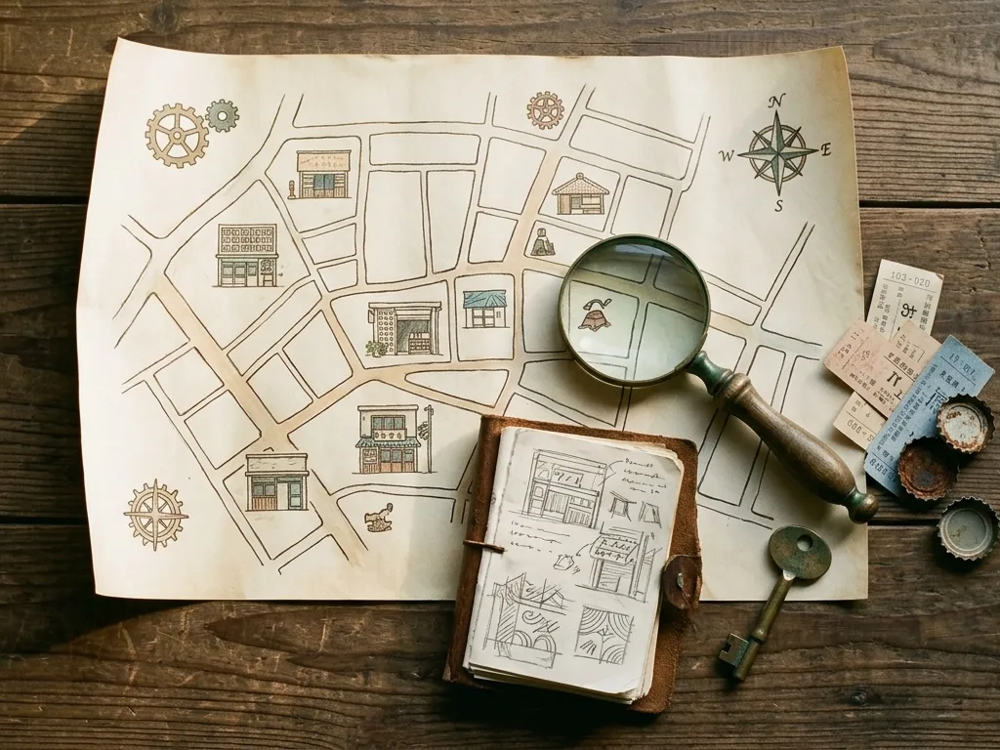
ABOUT
沖縄マニアについて
沖縄には、まだあまり知られていない面白いものがたくさんあります。
観光地のおみやげではなく、沖縄の街角や小さなお店で見つけた、ちょっと変わったもの、珍しいもの、思わず手に取りたくなるもの。
沖縄マニアは、そんな「沖縄の掘り出しもの」を探して集めています。沖縄に詳しくなくても大丈夫。「なんか面白い」と感じてもらえたら、それで十分です。
次は何が見つかるか、お楽しみに。
- 01沖縄の街やお店を歩いて、探す
- 02気になったものを、見つけて集める
- 03SHOPから、お届けする
PICK UP
今回の発掘品
沖縄で見つけた、ちょっと気になるものたち。
くわしい商品情報は、SHOPでご覧いただけます。
※現在の画像は、沖縄マニアの世界観を表すイメージ画像です。実際の商品・価格・在庫はSHOPでご確認ください。
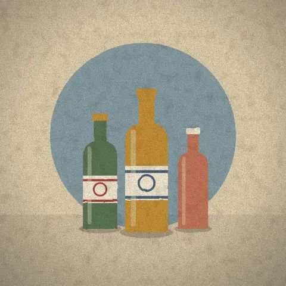
No.02イメージ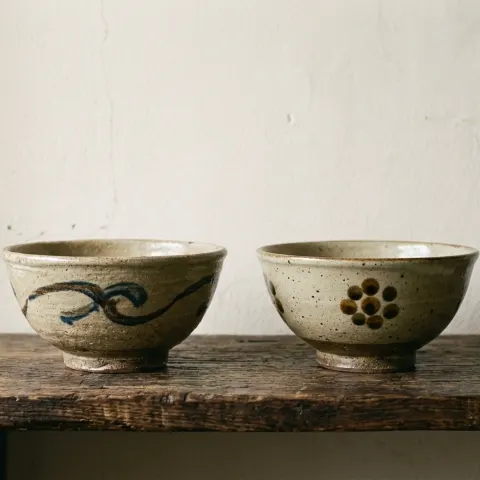
No.03イメージ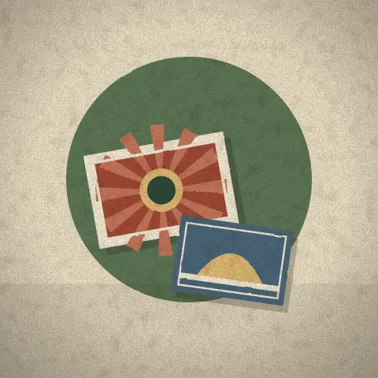
No.04イメージ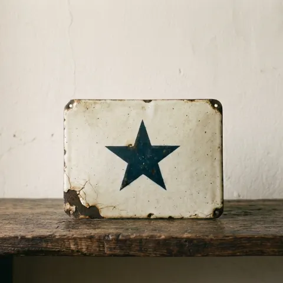
No.05イメージ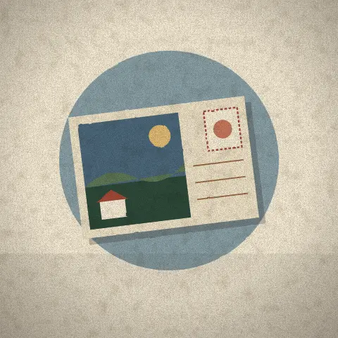
No.06イメージFOUND IN OKINAWA
沖縄で見つけたもの
売りものではないけれど、思わず足を止めてしまったもの。沖縄マニアが街で出会った「気になるもの」の記録です。
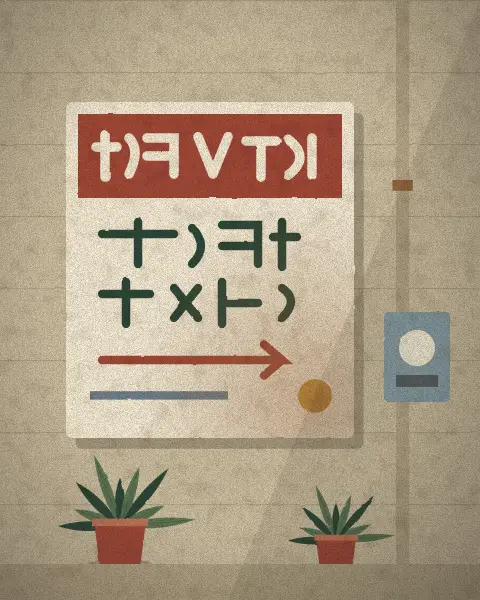
街角の手描き看板
何度も塗り直された跡まで、味になっている。
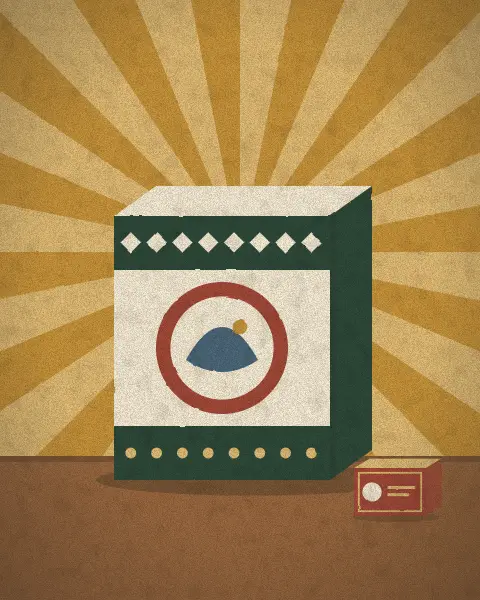
ローカルなパッケージ
昔から変わらないデザインに、つい見入ってしまう。
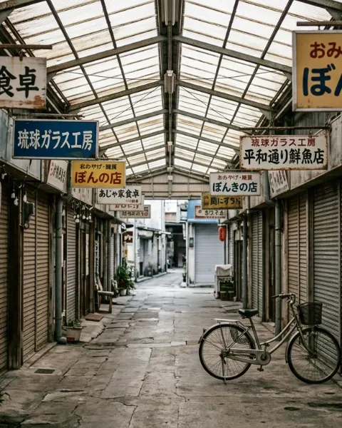
商店街のアーケード
少しだけ時間が止まったような、看板の続く通り。
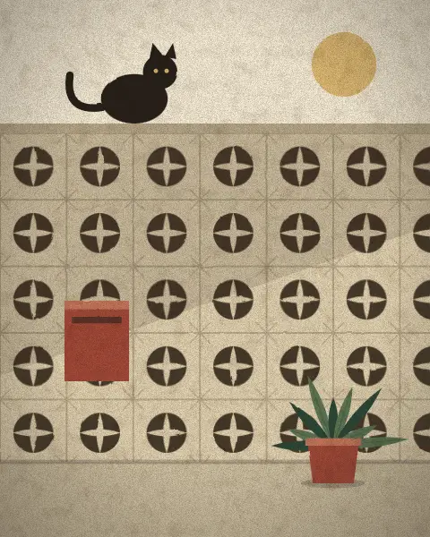
花ブロックの塀
沖縄の家でよく見かける透かしブロック。猫の特等席。
※イラストはイメージです。実際に見つけたものは、Instagramで記録しています。
沖縄マニアの発掘記録
沖縄で見つけた、気になるものを日々記録しています。
新しい発掘品のお知らせも、Instagramから。
Instagramを見る
@okinawamania.shop
ONLINE SHOP
SHOP 沖縄マニア
気になるものが見つかったら、SHOPをのぞいてみてください。
新しい発掘品も、少しずつ追加していきます。
購入はこちら
ご購入・お支払いは公式オンラインショップで行います